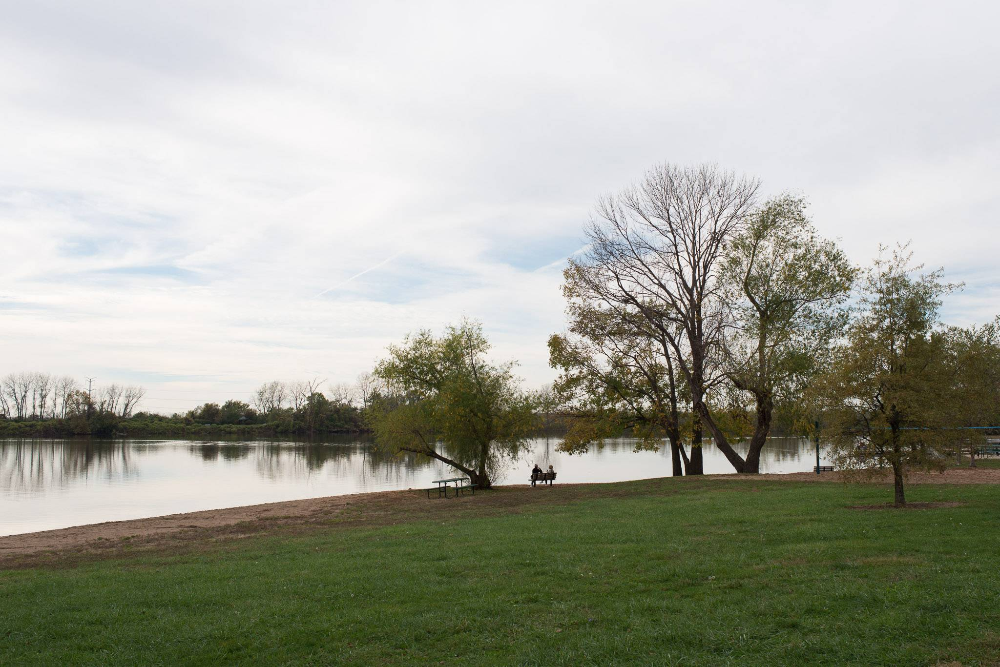

Bioconda, UpSetR, and Snakemake
Liang-Bo Wang (亮亮)
, 2016-12-27
Bioconda, UpSetR, and Snakemake
By
Liang
2
under CC 4.0 BY license
Esc
to overview
←
→
to navigate
Q&A

About Me
亮亮, Liang
2
or Bobo
Computational Biology PhD student at Washington Univsity in St. Louis (WUSTL)
Speak Python and R
Staff of PyCon TW 2014–2016
Current open source project:
Python official doc translation